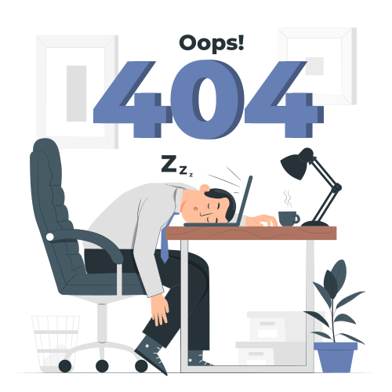

February 1, 2022
Do you feel burnt out?
A few years ago, I found myself really burnt out. Well, at the time, I wasn’t actually sure that’s what it was. At first “burnout” seemed like a dramatic way to describe what I was experiencing. But I was really, really tired. I was struggling to motivate myself and looking at my calendar started filling me with a sort of low-grade dread.
What I learned pretty quickly is that our culture doesn’t understand
burnout, what
it stems from or how common it is. We do not understand that a lot of us can get burnt out on a perfectly
“normal” 40-hour work week. That’s partly because that 40-hour work week is a completely arbitrary creation,
and ignores data that shows that most people can only give three to four hours of focused attention to their
work a day before there are diminishing returns. (I highly recommend the book Laziness Does Not Exist on
this.) But the other reason we can get burnt out on a “normal” schedule is that overworking isn’t always the
cause. Job burnout is very real, but it is not the only cause of burnout.
We tend to think that taking a rest or a break from work will always reverse our burnout. (And sometimes it
will!) But because we can also get burnt out from other, less obvious causes, the cures are often less
obvious as well. We can get burnt out from years of stress. We can get burnt out from unresolved emotions or
unresolved trauma. And we can get burnt out from simply living the wrong life for us (the wrong job, the
wrong career, the wrong relationship, etc). If your cause of burnout stems from one of those less obvious
places, just taking a break from work will not cure your burnout. You are going to have to do a little more
digging to figure out the cause of your depletion. The cause may be more emotional and spiritual than merely
physical.
Right now, two years into the stress and uncertainty of this pandemic, most of us are experiencing burnout
big-time. And while it partly stems from the physical exhaustion of overhauling everything about the way we
live, work and parent, it’s also probably stemming from nonstop stress and emotional exhaustion too. We also
don’t have a good understanding of the subtler ways that burnout manifests beyond a general sense of
exhaustion. Because of this, lots of people misunderstand what they are experiencing and try to “push
through”, leading to even more burnout. Burnout can also manifest as apathy, difficulty focusing, cynicism,
pessimism and other symptoms of depression and anxiety. It can manifest as physical symptoms such as chronic
fatigue, insomnia and lowered immunity.
How many of us experience those symptoms, with no idea that burnout could be the culprit, and just pound
another coffee and keep going? No wonder we are so tired and wired and low-grade miserable. We are living in
a culture that doesn’t understand or honor the human need to relax and recuperate. We are expected to
operate like machines, with barely any downtime at all. So – assuming you can’t quit your life and go chill
on a beach for a few years – what does healing from burnout look like? The first cure is rest. And I mean
true rest, not rest where you feel stressed and guilty for resting. That’s not rest.